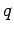

Next: About this document ...
Up: frt
Previous: Proof of proposition 7.3
- Br
- Brauer, R.: On Algebras which are connected with the
semisimple continuous Groups. Annals of Math. Vol. 38, No. 4 (1937),
857-871.
- Co
- De Concini C.: Symplectic Standard Tableaux. Advances
in Mathematics 34 (1979), 1-27.
- Do1
- Donkin, S.: On Schur Algebras and Related Algebras I,
Journal of Algebra 104 (1986), 310-328.
- Do2
- Donkin, S.: Good Filtrations of Rational Modules for
Reductive Groups. Arcata Conf. on Repr. of Finite Groups. Proceedings
of Symp. in Pure Math., Vol. 47 (1987), 69-80.
- Do3
- Donkin, S.: Representations of symplectic groups and the
symplectic tableaux of R.C. King. Linear and Multilinear Algebra, Vol.
29 (1991), 113-124.
- Dt
- Doty, S.: Polynomial Representations, Algebraic Monoids,
and Schur Algebras of Classical Type. J. of
Pure and Applied Algebra 123 (1998), 165-199.
- GL
- Graham, J.J., Lehrer, G.I.: Cellular Algebras.
Invent. Math. 123 (1996), 1-34.
- Gg
- Grigor'ev, D. J.: An Analogue of the Bruhat Decomposition
for the Closure of the Cone of a Chevalley Group of the Classical
Series. Soviet Math. Dokl., Vol. 23 (1981), No. 2.
- Ha
- Hayashi, T.: Quantum Deformation of Classical Groups.
Publ. RIMS, Kyoto Univ. 28 (1992), 57-81.
- Ia
- Iano-Fletcher, M.: Polynomial Representations of
Symplectic Groups. Thesis, University of Warwick, 1990.
- Ki
- King, R.C.: Weight multiplicity for classical groups.,
Group Theoretical Methods in Physics (fourth International Colloquium,
Nijmegen 1975), Lecture Notes in Physics 50, Springer 1975.
- Ma
- Manin, Y.I.: Quantum Groups and Non-Commutative Geometry.
CRM, Univesitè de Montrèal, 1988.
- Mr
- Martin, S.: Schur Algebras and Representation Theory.
Cambridge University Press, 1993.
- Oe
- Oehms, S.: Symplektische -Schur-Algebren, Thesis,
University of Stuttgart.
- RTF
- Reshetikhin, N. Y., Takhtadjian, L. A., Faddeev, L. D.:
Quantization of Lie groups and Lie algebras, Leningrad Math. J. 1
(1990), 193-225.
- Su
- Sudbery, A.: Matrix-Element Bialgebras Determined by
Quadratic Coordinate Algebras. J. of Algebra, Vol 158, (1993), 375-399.
- Ta
- Takeuchi, M.: Matric Bialgebras and Quantum Groups.
Israel J. of Math., Vol. 72, Nos. 1-2, (1990), 232-251.
- We
- Wenzl, H.: On the structure of Brauer's centalizer
algebras. Annals of Math., 128 (1988), 173-193.
Sebastian Oehms
2003-03-26